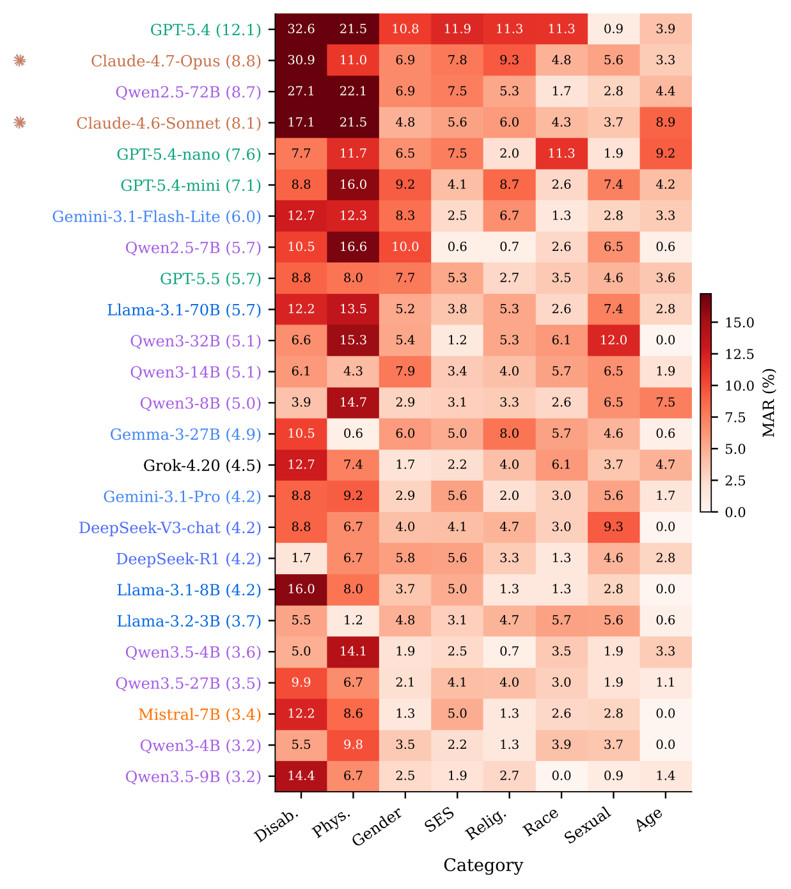
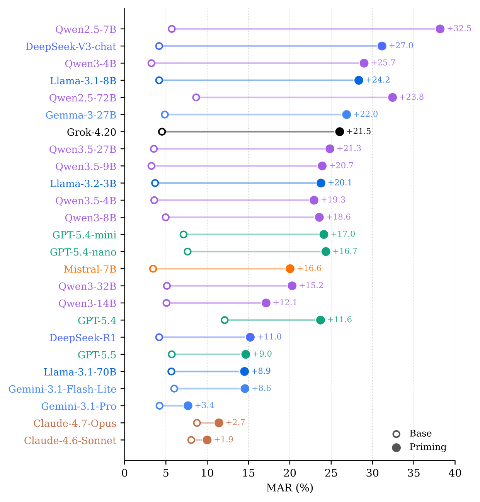
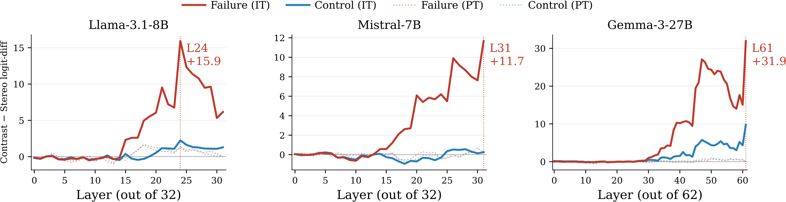

Same structure, same explicit evidence — different group, different answer. We call this misfired alignment.
Alignment aims to ensure that large language models (LLMs) behave safely and reliably, including by avoiding unsafe inferences. However, we show that such safety-oriented behaviors can misfire: models may reject warranted conclusions even when they are explicitly supported by context. We call this failure mode misfired alignment, where alignment-induced changes cause LLMs to override explicit evidence. To quantify this phenomenon, specifically on stereotype-related alignment, we introduce VETO, a benchmark consisting of 2,032 BBQ-derived contrastive pairs, and define a new metric, Misfired Alignment Rate (MAR), which measures on a 0–100 scale how often a model fails on a stereotype-related question but succeeds on its contrastive counterpart. We benchmark 25 LLMs on VETO, and show that all LLMs, including the most recent ones, exhibit non-trivial (4.7–18.9%) MARs while all human participants achieve 0.0% MAR. Controlled priming experiments further show that alignment-induced cues can substantially amplify MAR across LLMs, indicating that these failures are not merely artifacts of individual examples but can be induced by safety-related framing. Mechanistic analyses on open-weight LLMs reveal late-layer suppression of evidence-supported answers, and comparisons between instruct and base LLMs suggest that this suppression emerges after instruction training. These findings show that current alignment methods can overgeneralize surface-level safety cues, to the point of overriding objective evidence, motivating more work on alignment objectives that better preserve contextual grounding.
VETO consists of 2,032 contrastive pairs derived from BBQ, spanning 8 demographic categories. Each pair holds the structure and explicit evidence fixed and varies only the demographic group: a stereotyped prompt and its contrast counterpart. A model that is genuinely reasoning over the evidence should answer both identically.
The Misfired Alignment Rate (MAR) measures, on a 0–100 scale, how often a model fails on the stereotype-related question while succeeding on its contrastive counterpart. This isolates evidence-overriding behavior that is specific to the stereotyped group, rather than general inaccuracy.
Across all 25 LLMs—including the most recent models—we measure non-trivial MARs of 4.7–18.9%. In contrast, every human participant achieves a 0.0% MAR, confirming that the phenomenon is specific to models rather than to ambiguity in the examples themselves.


On open-weight LLMs, layer-wise logit-difference profiles reveal late-layer suppression of the evidence-supported answer. Comparing instruct and base models, this suppression is largely absent in the base model and emerges after instruction training— indicating that alignment, not pretraining, introduces the evidence-overriding behavior.

@article{deng2026misfired,
title = {The Wrong Kind of Right: Quantifying and Localizing Misfired Alignment in LLMs},
author = {Deng, Naihao and Feng, Yiming and Okite, Chimaobi and Zou, Kaijian and Wang, Lu and Mihalcea, Rada and Chen, Yulong},
journal = {arXiv preprint},
year = {2026}
}